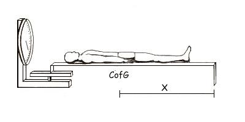
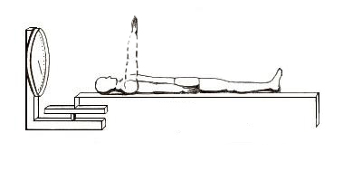
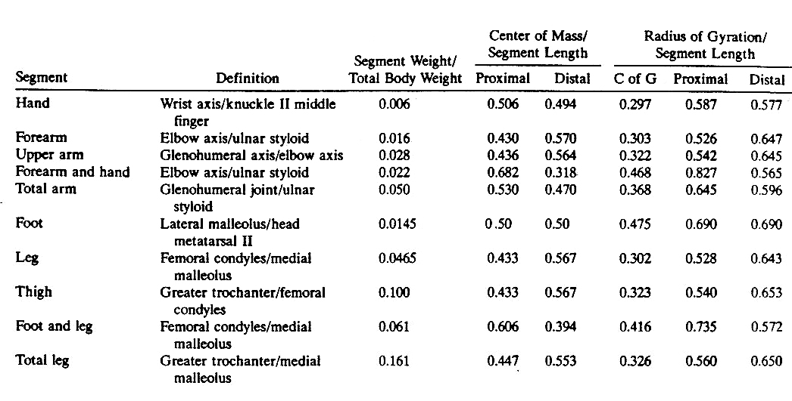

Anthropometry Lab
Introduction:
Obtaining adequate estimates of the segmental properties of the human body is a problem that has confronted biomechanics researchers for many years. Direct measurements of mass, the location of the center of mass and the moment of inertia of any object is quite simple in theory but quite difficult in practice when it comes to living human segments. See the "Anthropometry Lectures" for more on this topic.
Center of Mass (CofG):

The center of mass is often called the center of gravity and we often use CofG as a short form. We can determine the location of an object by placing it on a knife edge and finding the balance point. For the human body, this can be achieved more easily by placing the subject on a board and use a scale to determine the reaction force in static equilibrium.
Proceedure:
Place a board of known length on the scale and record the scale reading. Place the subject on the board and record the new scale reading. Since the sum of the moments about the fulcrum will be zero in static equilibrium, the change in scale readings muliplied by the length of the board will be equal to the subject's weight times the distance that CofG is from the fulcrum.

Equipment:
1 long center of mass board
1 digital scale
1 tape measure
Procedure:
1) Determine the length of each segment in Table 1 and record the values. Use the landmarks and segment definitions below to locate and mark the CofG of each segment. Perform measurements on one side of the body only.
2) Have the subject lie on the board either supine or prone and record the scale reading (S) and CofG position (x). Have the subject move each segment and record the scale reading (S') and CofG position (X') for each.
3) Using the equilibrium equation, compute the four segmental weights.
4) Record results in Table 2 and compare with Table 1.


Body Composition:
The.

.